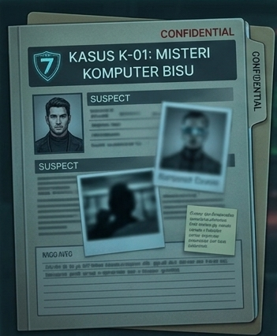
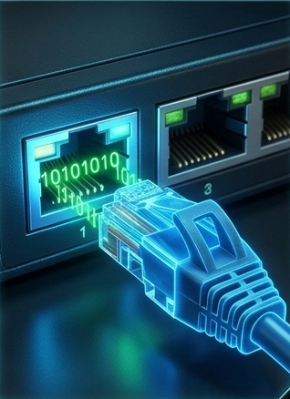
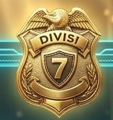

REKRUTMEN DETEKTIF
DIVISI 7
Kode Agen Rahasia
K
7
X
9
Pengirim (Sender)
↓ Layer 7 → Layer 1
Alur
Urutan
Urutan
Penerima (Receiver)
↑ Layer 1 → Layer 7
×
TCP
PROTO SEGMENT
PDU TELEMETRY
ONLINE
PROTO SEGMENT
PDU TELEMETRY
ONLINE
TCP 3-Way Handshake ('SYN', 'SYN-ACK', 'ACK')
Port 443 HTTPS
Source
IP Address: 192.168.1.10
Destination
IP Address: 203.0.113.50
10070013001900250031003700

KASUS K-01: MISTERI KOMPUTER BISU
Kontak Radio Agen FG
(Hint -15 Poin) — Klik untuk Petunjuk
OSI 7-Layer Model
KLIK TIAP LAYER DI ATAS UNTUK MEMINDAI PAKET
Temukan layer yang menjadi sumber masalah jaringan pada kasus ini.


Digital Certificate of Honor
DETEKTIF LEGENDARIS DIVISI 7
— AGEN K7X9
— AGEN K7X9
Nama Kadet • X TKJ 1
Penguasaan 7 Lapisan OSI: 100% Complete
Nilai Akhir: 100 / 100
Nilai Akhir: 100 / 100
🎖️
OFFICIAL SEAL
7
DIVISI 7